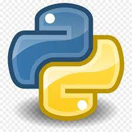

Upon completing {123-CU-70CM} Fundamentals of Programming, I have gained a profound appreciation for the immense value and practicality of acquiring programming skills. To excel in programming, it is essential to grasp the program's flow and logic, as this is pivotal in guidingthe programmer in determining the subsequent steps in the program's development. In today's world, programming is an incredibly important and in-demand skillset, with its applications spanning from software development to data analysis to automation. Therefore, having programming skills can significantly boost one's career opportunities and offer a competitive advantage in the job market. Throughout the course, while engaging with the course programming assignments, I found myself exceeding the basic requirements. I proactively sought out additional resources such as the tkinter guide, in an effort to deepen my comprehension of programming concepts and further refine my skills. Specifically, I aimed to learn how to open files using tkinter filedialog(), prompting me to investigate the guide more thoroughly and acquire a more profound understanding of the programming language. Nonetheless, I acknowledge that there is substantial room for growth in my programming skills. I am dedicated to ongoing learning and expanding my horizons in this course, with the goal of becoming an IT consultant. As such, I intend to allocate more time and effort towards practicing programming and exploring supplementary resources, including reading documentations and tutorials, to enrich my skills.
